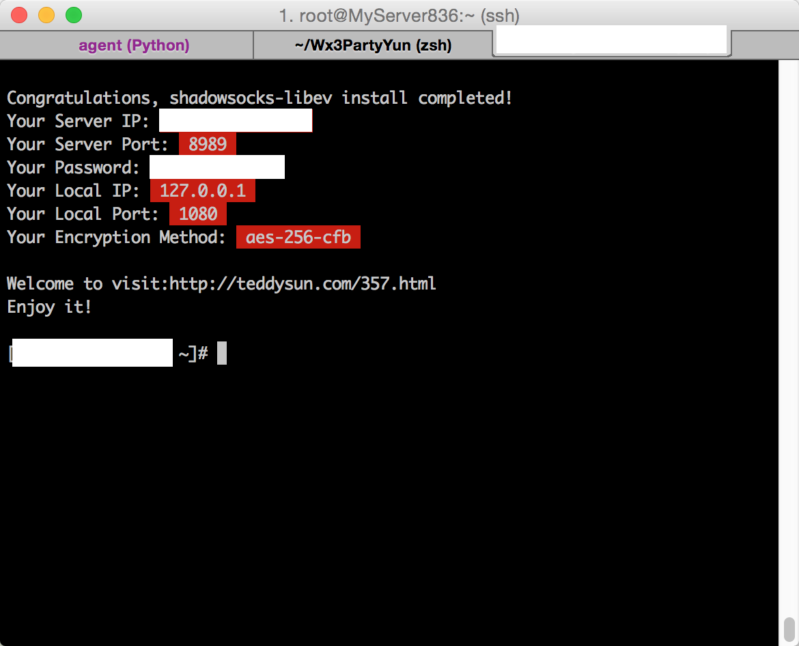
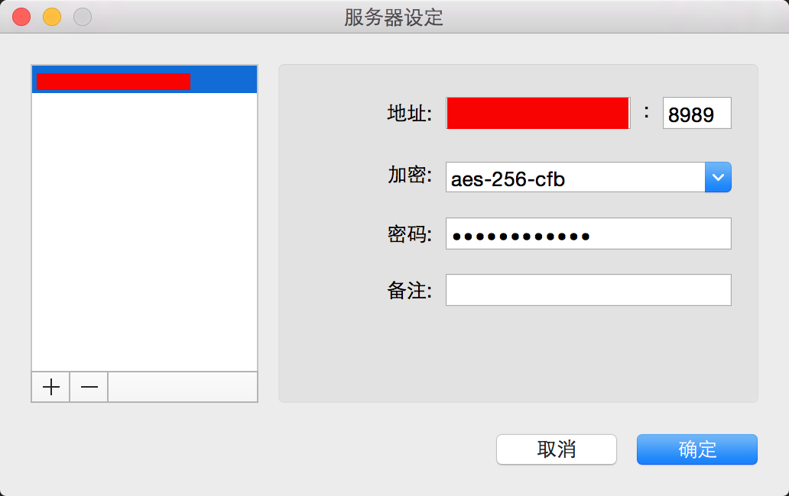

安装Shadowsocks
很久没写博客了，最近学了一些Bootstrap，网页切图，设计心理学的知识，还有微信运营的东西，很杂
Goagent的完美替代者Shadowsocks
然后去网上找了一个一键安装包：CentOS下shadowsocks-libev一键安装脚本；在vps上面一步搞定服务端的部署

1 | //查看shadowsocks运行状态 ps -ef | grep ss-server | grep -v ps | grep -v grep //使用命令： 启动：/etc/init.d/shadowsocks start 停止：/etc/init.d/shadowsocks stop 重启：/etc/init.d/shadowsocks restart 查看状态：/etc/init.d/shadowsocks status |
Shadowsocks客户端,Mac端推荐：Shadowsocks for Mac - Shadowsocks GUI designed for OS X 10.7+
装好之后按照终端的输出配置好即可
